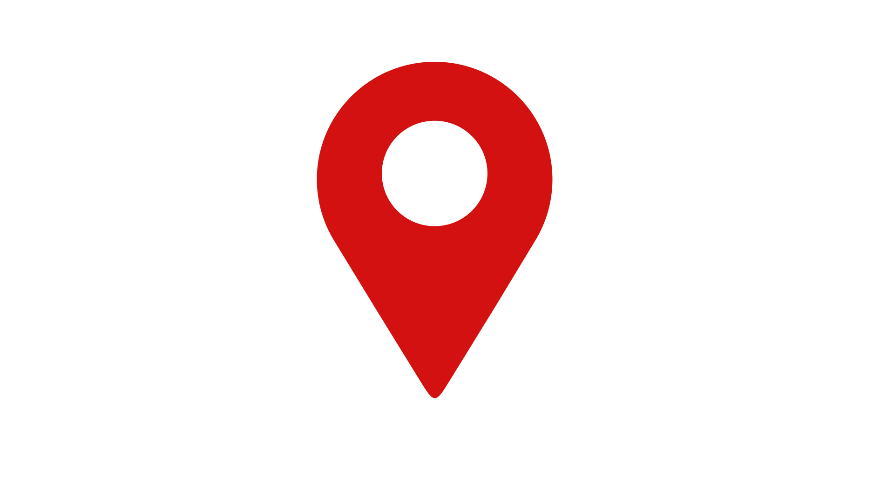
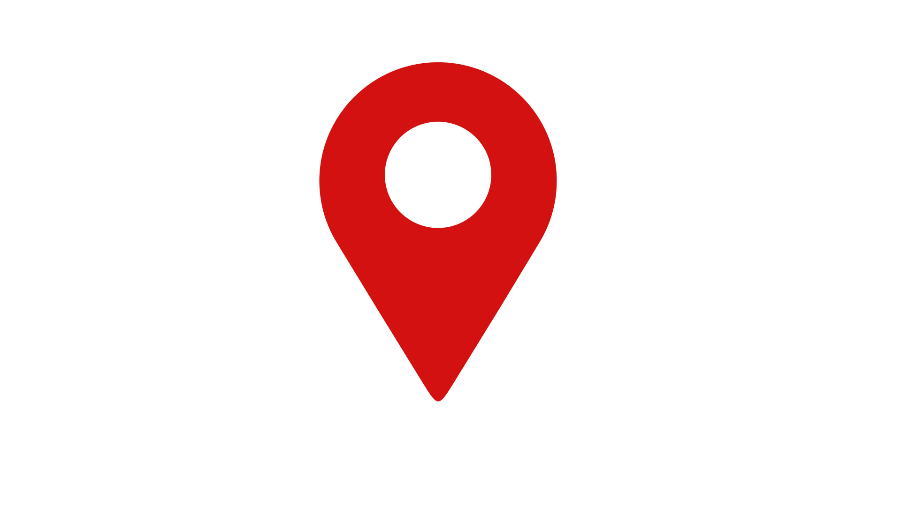
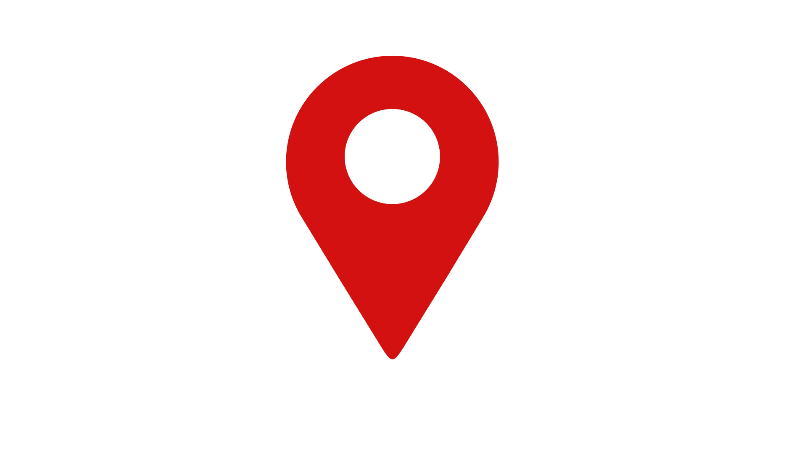
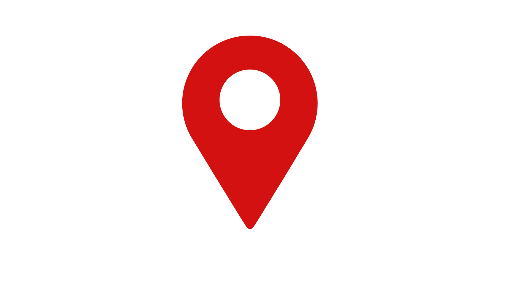

Säntis ist der ideale Erlebnisberg für Gross und Klein – Sommer wie Winter. Alle 30 Minuten fährt die Schwebebahn von der Schwägalp hoch auf den Säntisgipfel. Auf dem Gipfel stehen zwei moderne Restaurants und eine interaktive Erlebniswelt für rund 400’000 Besuchende im Jahr zur Verfügung.
Am Fusse des Säntis steht das Drei-Sterne-Superior-Hotel «Säntis – das Hotel». Modern, inspirierend und charmant. Übernachten Sie auf der Schwägalp und entspannen Sie in unserer Wellnessoase mit Blick auf den zauberhaften Weidwald.
Sie schreiten durch die Geschichte geheimnisvoller Moore, holen tief Luft in einzigartigen Weidwäldern, beobachten seltene Tiere und zauberhafte Pflanzen, erfahren auf Schritt und Tritt Faszinierendes über das Leben und die Kultur auf der Alp, tauchen ein in die erhabene Geologie des Säntismassivs und die wundersame Erdgeschichte vor einer der schönsten Naturkulisse Europas.
Die grösste Schweizerfahne der Welt wird jedes Jahr am 1. August an der Säntiswand ausgerollt. Die Idee zu dieser 80 auf 80 Meter grossen Nationalfeier-Deko ist aus dem dramaturgischen Stoff eines misslungenen Guinness-Weltrekords genäht worden, an dem Israel mitbeteiligt war.